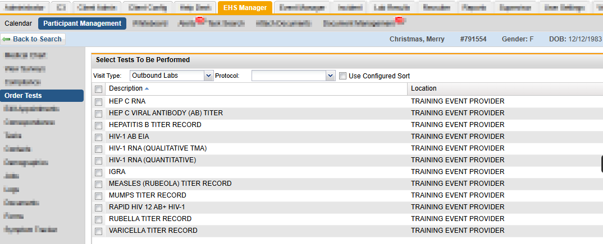
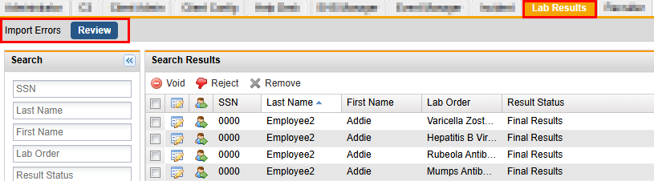
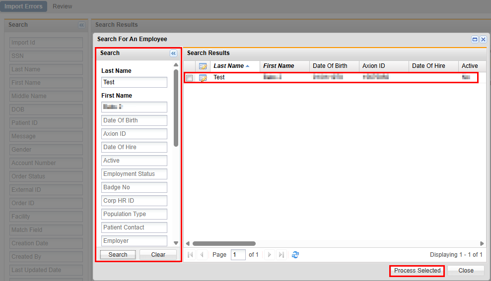
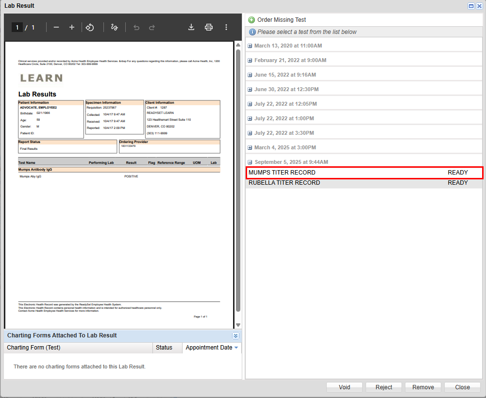
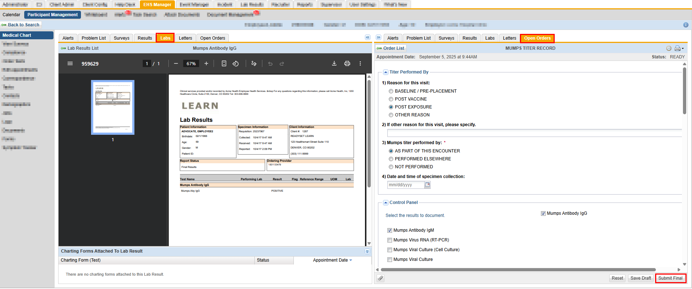
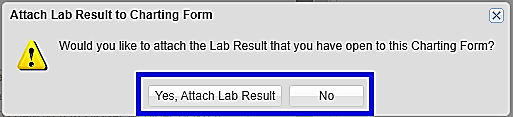

The Lab Results interface allows Employee Health departments to review employee lab results and enter them in the employee’s medical chart. To review lab results, the employee health staff simply clicks on the results they want to review. If acceptable, the employee health staff can side by side enter the lab results on the appropriate charting form.
The table below shows the overall process of tasks/activities related to lab integration. The task/activity is listed in the first column, the user performing those tasks/activities in the middle column, and the specific portal to use in the last column.
| Task/Activity | User | Location |
|---|---|---|
| 1. Schedule and Order Labs | Front Desk or EHS Clinician | EHS Manager Tab/Order Tests |
| 2. Collect Specimens | EHS Clinician or Lab | EHS Clinic or at Lab |
| 3. Specimen Analysis and Results | Lab | Lab |
| 4. Access and Review Test Results | EHS Clinician | EHS Manager Tab/Lab Results |
| 5. Employee Access to Results | Employee | My Health |
Order the lab charting forms prior to the participant’s specimen collection. To order lab charting forms, do the following:

Once ordered, lab tests will be in ‘Ready’ Status in the Open Orders tab under the Medical Chart menu.
The lab analyzes the specimens collected and sends results in an HL7 file that is viewable in your Labs Results tab. The file is automatically uploaded into your system. The Lab Results tab has two menu options; Import Errors and Review. Lab results with no errors are in the Review tab. Lab test results that have errors will be in the Import Errors tab.

Lab results that display under Import Errors are due to errors in the file either from the lab or data within your ReadySet system. The types of errors are listed below.
Import Status (Error) | Error Message |
Employee Not Matched (will have one of or any combination of the errors listed) | Multiple (#) employees found. “Name”, dob:mm/dd/yyyy, |
Date of birth error, lab: mm/dd/yyyy emp: mm/dd/yyyy | |
No employee match found for “Name” | |
Gender error, lab: F or M, emp: F or M | |
Last Name error: lab: “Name” emp: “Name” | |
SSN error, lab: ********* emp: *****#### |
The following options are available when you open each entry.
To review an entry in the Import Errors list, do the following:
Use the following steps to correct the Employee Not Matched import status error:

When the HL7 file has been uploaded, the successful lab test results are found under the Review tab. The options below are available when you open each entry:
Once Lab Results are available and verified, they will need to be added to the participant's chart. To enter lab results, do the following:

If the charting form is not available, use the Order Missing Test button to add the needed charting form.
If there are no appointments displaying in the panel, select Close.


Lab results can be printed from both Import Errors and Review tabs.